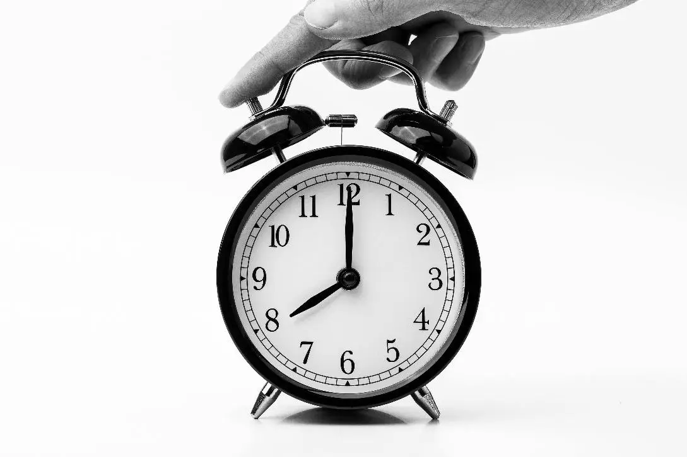

Drowsiness Management
⚠️ Seek Immediate Medical Help for Drowsiness If:
- Sudden or excessive drowsiness that is unusual or hard to wake from
- Confusion, slurred speech, or disorientation
- Drowsiness with fever, headache, or stiff neck
- Accompanied by low blood sugar, low blood pressure, or fainting
- Drowsiness after taking new medication or chemotherapy
- Weakness or numbness in the body
- Unusual behavior, agitation, or hallucinations
1. Regular Sleep Schedule
Follow a proper sleep schedule ensuring 8 hours of sleep per day.

2. Plan Daily Activities
Plan your daily activities according to your interest to keep yourself engaged. Maintain a journal facilitating organizing tasks based on energy levels and symptoms.
3. Perform Moderate Physical Activities
-
Walking Video 4
- Instructions: 5-10 minutes at moderate intensity, rest after every 5-10 minutes. Don’t strain.
- Benefits: Improves cardiovascular endurance.
-
Leg Swings
Video
- Hold a stable support and swing each leg forward-backward.
- 10–15 swings per leg, 3–4 times.
-
Wrist Circles
Video
- Rotate wrist clockwise/counterclockwise (5 times each), 2–3 sets per wrist.
-
Ankle Rotations
Video
- Extend one leg and rotate ankle 5x clockwise & counterclockwise, 2–3 sets.
-
Shoulder Shrugs & Rolls
Video
- Raise shoulders, hold, relax. Do circular motion.
- 10 times up/down, 2–3 sets each shoulder.
-
Elbow Flexion & Extension
Video
- Bend and straighten arm 10 times, 2–3 sets per arm.
4. Yoga / Pranayama
-
Anulom Vilom (Alternate Nostril Breathing) -
Video
-
How it's done:
- Sit comfortably with a straight spine.
- Close right nostril with thumb, inhale left.
- Close left nostril, exhale right.
- Repeat in reverse. Continue alternately.
-
Benefits:
- Calms nervous system
- Improves focus and clarity
- Reduces stress and anxiety
- Balances brain hemispheres
-
How it's done:
-
Kapal Bhati (Skull Shining Breath) -
Video
-
How it's done:
- Sit comfortably in meditative posture.
- Passive inhale, forceful exhale by contracting abdomen.
- Repeat 30–60 times, rest and deep breath.
-
Benefits:
- Detoxifies lungs/organs
- Stimulates digestion
- Boosts circulation and energy
- Clears sinuses
-
How it's done:
5. Engage in Hobbies
- 🎵 Listen to Music Video 1
- 🌱 Gardening Video 3
- 🎨 Painting Video 2
- 📝 Journaling Video 8
6. Nutrition Support
DISCLAIMER: Dietary suggestions in MedPANDA are for general guidance only. Always follow advice from a qualified dietitian tailored to your condition.

Tip: Eat small, frequent meals rich in calories and proteins — such as nuts, cheese, yogurt, eggs, beans, peas, and dal.
If you experience increased drowsiness or weakness, seek immediate
medical attention.